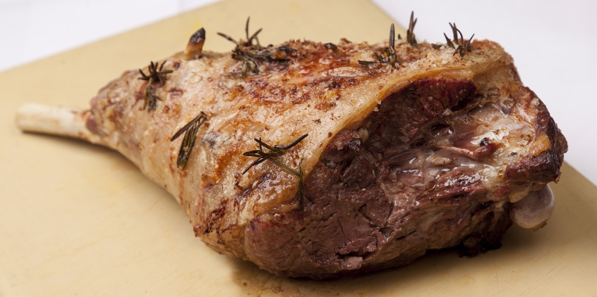

Viking Lamb

Description
Leg of a lamb baked in a hole in the ground.
Ingredients
- 1 leg of lamb
- Honey
- Mustard
- Cloves of garlic, sliced inserted into pockets
- Sprigs of rosemary
- Salt and Pepper
- Aluminum Foil
Directions
- Insert sliced garlic into pockets
- Cover leg of lambda with honey and mustard
- Salt and pepper the leg of lamb
- Put rosemary over the lamb
- Wrap lamb in foil
- Dig cooking pit about half a meter
- Fill hole with gocks and wood and light the wood on fire
- Wait for rocks to glow red hot
- Remove rocks and add lamb
- Re-fil pit with dirt
- After about 1 hour and 15 minutes remove lamb and enjoy